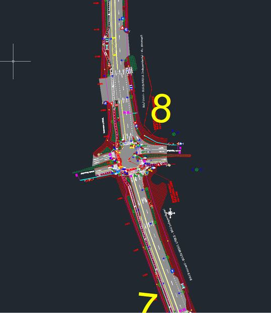

Pregătim partea tehnică și financiară a ofertei pentru licitațiile publice din SEAP/SICAP, în formatul cerut prin documentația de atribuire. Dumneavoastră executați lucrarea; noi ne ocupăm de hârtii, de calcule și de termen.

Prețurile rămân ale dumneavoastră. Noi structurăm, calculăm și verificăm; decizia comercială — adaosul, marja, strategia de preț — vă aparține integral. Nu întocmim oferte pentru doi participanți la aceeași procedură.